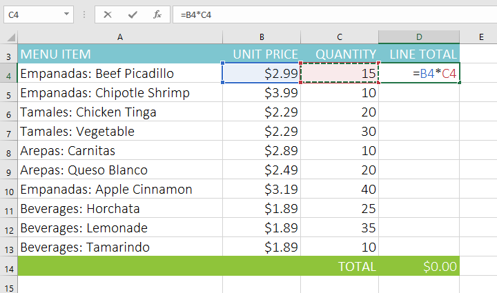
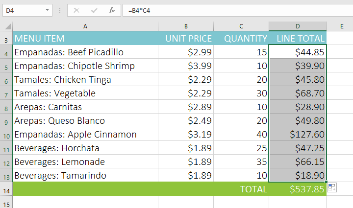
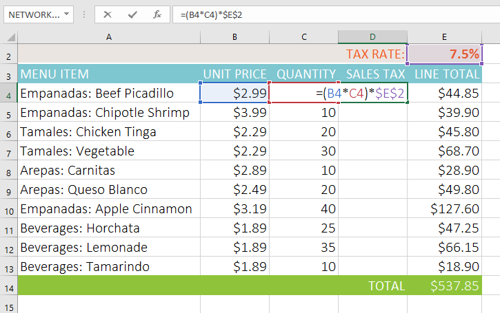

Introducere

Există două tipuri de referințe de celule: relative și absolute. Referințele relative și absolute se comportă diferit atunci când sunt copiate și completate în alte celule. Referințele relative se modifică atunci când o formulă este copiată într-o altă celulă. Referințele absolute, pe de altă parte, rămân constante, indiferent unde sunt copiate.
Referințe relativeÎn mod implicit, toate referințele de celule sunt referințe relative. Când sunt copiate în mai multe celule, acestea se modifică în funcție de poziția relativă a rândurilor și coloanelor. De exemplu, dacă copiați formula =A1+B1 de pe rândul 1 în rândul 2, formula va deveni =A2+B2. Referințele relative sunt deosebit de convenabile ori de câte ori trebuie să repetați același calcul pe mai multe rânduri sau coloane.
Pentru a crea și copia o formulă folosind referințe relative:În exemplul următor, dorim să creăm o formulă care va înmulți prețul fiecărui articol cu cantitatea. În loc să creăm o formulă nouă pentru fiecare rând, putem crea o singură formulă în celula D4 și apoi o putem copia în celelalte rânduri. Vom folosi referințe relative, astfel încât formula să calculeze corect totalul pentru fiecare articol.
- Selectați celula care va conține formula. În exemplul nostru, vom selecta celula D4.
- Introduceți formula pentru a calcula valoarea dorită. În exemplul nostru, vom tasta =B4*C4.
- Apăsați Enter pe tastatură. Formula va fi calculată, iar rezultatul va fi afișat în celulă.
- Localizați mânerul de umplere în colțul din dreapta jos al celulei dorite. În exemplul nostru, vom localiza mânerul de umplere pentru celula D4.
- Faceți clic și trageți mânerul de umplere peste celulele pe care doriți să le umpleți. În exemplul nostru, vom selecta celulele D5:D13.
- Eliberați mouse-ul. Formula va fi copiată în celulele selectate cu referințe relative, afișând rezultatul în fiecare celulă.





Poate exista un moment în care nu doriți ca o referință de celulă să se schimbe atunci când este copiată în alte celule. Spre deosebire de referințele relative, referințele absolute nu se modifică atunci când sunt copiate sau completate. Puteți utiliza o referință absolută pentru a menține constant un rând și/sau o coloană.
O referință absolută este desemnată într-o formulă prin adăugarea unui semn dolar ($). Poate precede referința coloanei, referința la rând sau ambele.
Când scrieți o formulă, puteți apăsa tasta F4 de pe tastatură pentru a comuta între referințele de celule relative și absolute, așa cum se arată în videoclipul de mai jos. Acesta este un mod ușor de a introduce rapid o referință absolută.
Pentru a crea și copia o formulă folosind referințe absolute:În exemplul de mai jos, vom folosi celula E2 (care conține cota de impozitare de 7,5%)pentru a calcula taxa pe vânzări pentru fiecare articol din coloana D. Pentru a ne asigura că referința la rata de impozitare rămâne constantă, chiar și atunci când formula este copiată și completată în alte celule, va trebui să facem din celula $E$2 o referință absolută.
- Selectați celula care va conține formula. În exemplul nostru, vom selecta celula D4.
- Introduceți formula pentru a calcula valoarea dorită. În exemplul nostru, vom tasta = (B4*C4)*$E$2, făcând $E$2 o referință absolută.
- Apăsați Enter pe tastatură. Formula se va calcula, iar rezultatul va fi afișat în celulă.
- Localizați mânerul de umplere în colțul din dreapta jos al celulei dorite. În exemplul nostru, vom localiza mânerul de umplere pentru celula D4.
- Faceți clic și trageți mânerul de umplere peste celulele pe care doriți să le completați (celulele D5:D13 în exemplul nostru).
- Eliberați mouse-ul. Formula va fi copiată în celulele selectate cu o referință absolută, iar valorile vor fi calculate în fiecare celulă.

